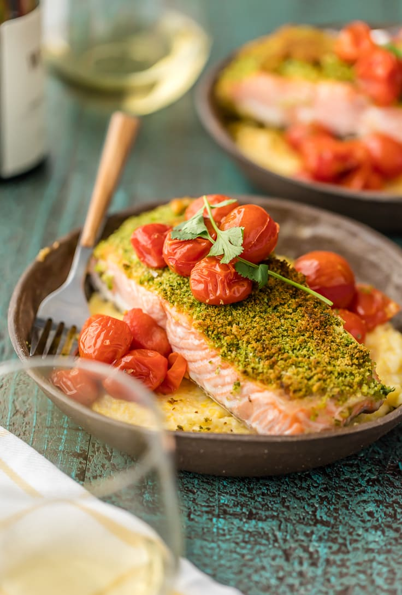

Herb Crusted Salmon with Goat Cheese Polenta

How to make the tastiest salmon with an herby crust and a decadent side of creamy polenta
Herb Crusted Salmon with Goat Cheese Polenta is our favorite easy salmon recipe! This crusted salmon has so much flavor, and when mixed with roasted tomatoes and cheesy polenta, it makes the perfect healthy salmon and polenta meal. Serves 2 people.
Ingredients:
- 2 (6-ounce) salmon fillets
- 1 tablespoon Dijon Mmustard
- 1 cup cherry tomatoes
- 1/2 cup fresh parsley chopped
- 1/4 cup fresh basil chopped
- 1/2 clove garlic minced
- 3/4 cup Panko
- 1 tablespoon olive oil
- 3/4 cup yellow cornmeal
- 2 cups water
- 2 1/2 ounces goat cheese
- Salt
- Freshly ground black pepper
Instructions:
- Preheat oven to 450F.
- Line a baking sheet with foil and spray with nonstick spray.
- In a high powered blender or food processor, combine the parsley, basil, garlic, bread crumbs (or panko), olive oil, and salt. Blend until fully combined and minced. Set aside.
- Place the salmon fillets on the baking sheet and lay the tomatoes around the salmon.
- Spread 1/2 tablespoon of Dijon mustard onto each salmon fillet in a thin layer.
- Top each piece of salmon with a heaping spoonful of the herb mixture. Press down to make sure it attaches and forms a crust on each piece.
- Bake for 15-20 minutes or until the salmon is cooked and flaky throughout.
- While salmon is cooking, prepare the polenta. In a large heavy pan, bring the water to a boil. Add salt.
- Stir in the polenta and reduce to a simmer. Simmer for 15-20 minutes or until its thickened to your liking. Turn off the heat and stir in the goat cheese.
- Spoon some polenta into each bowl and top with salmon and tomatoes. Season with salt and pepper if needed. Enjoy!